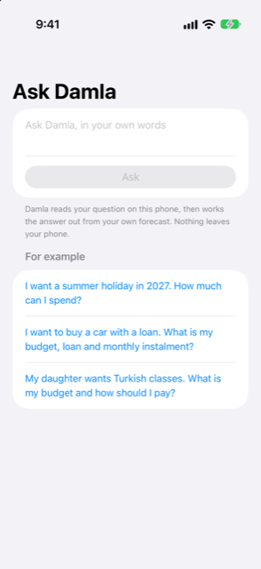

Guide › Planning
Ask Damla
Ask in your own words whether you can afford a holiday, a car or classes.
Ask Damla is a question box in the Plan tab that answers "can I afford this?" from your own forecast. You write the question the way you would say it. Damla tells you the amount your money can carry, and what that answer rests on.

When to use it
- Before you commit to a holiday, a wedding, a course or a home move, and you want to know what your forecast allows.
- When you are considering buying something with a loan and want the budget, the loan it can carry and the monthly payment.
- When something is paid over time (classes, a course) and you want to compare paying at once against spreading it.
- Any time you would otherwise wonder "what happens if I spend that?"
Step by step
- Open the Plan tab and tap Ask Damla.
- Tap the box marked "Ask Damla, in your own words" and write your question. You can also tap one of the ready questions under For example to fill the box.
- Tap Ask.
- Read the answer. A card shows the headline amount; below it are the details and a section called What this rests on.
- If Damla did not understand it, it says so. Try naming the thing (a holiday, a car with a loan, classes), and add the date or the price if you know it.
- For spending or a payment plan, tap Set aside for it if you want the answer turned into a goal: Damla adds it with this amount and date, so it can work out what to put aside each month.
How the answer is made
Damla reads your question on this phone to find what it is about, when you need the money and any price, term or interest rate you wrote. The model only reads the words; it never calculates.
The answer is then worked out by ordinary code from your forecast:
- For a holiday or other spending: a comfortable amount and the most your forecast allows. Comfortable means 80% of the most, so there is room for surprises. If you named a price, a pill says whether it fits comfortably, fits but tightly, or is more than your forecast allows.
- For a car or other loan: a comfortable monthly payment, the most a month allows, and the loan that payment carries over the term you choose. It also shows the down payment still possible and your budget in total. Change the loan term in months with a stepper, or the yearly interest rate in its field. The answer updates as you change them. If you wrote a price, Damla shows what that price looks like as a down payment plus monthly payments.
- For classes or anything paid over time: if you said the price, Damla compares paying at once with spreading it into equal monthly payments. It shows each way with the lowest balance it causes, and recommends the fewest payments that keep your balance comfortable. If you did not say the price, it shows what you could pay a month over different numbers of months.
What this rests on
The answer uses your forecast: your income, bills, cards and typical spending, and the money already in your accounts. Everyday spending from your bank accounts that is not already a bill is counted too, and the section says how much a month it assumed. Below you also see the forecast's start date, your minimum balance and, when it matters, the balance on that date.
Good to know
- Your question and your data stay on the phone. Nothing leaves it.
- The answer is an estimate from your own numbers, not financial advice.
- The two numbers to compare are comfortable and the most. Spend more than comfortable only if you accept a thinner margin for surprises.
- The answer changes as your books change, so you can ask again after adding income or bills.
Related
Something unclear or missing? Write to support@raveniq.ai and say which page.